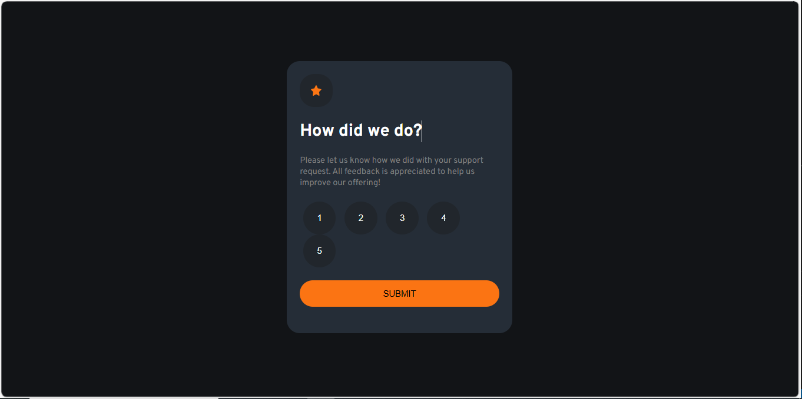
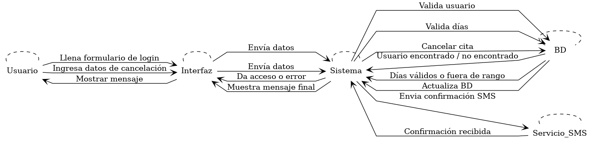
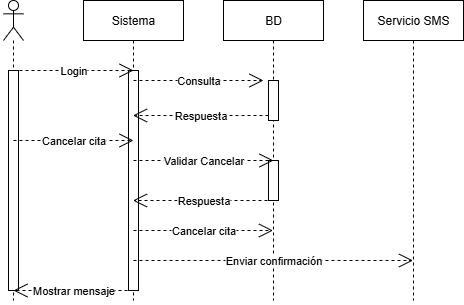
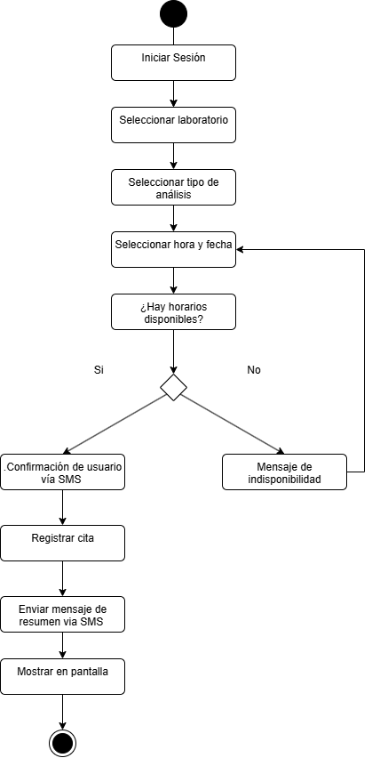
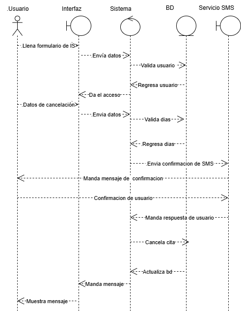
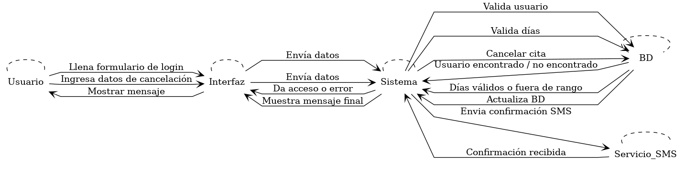
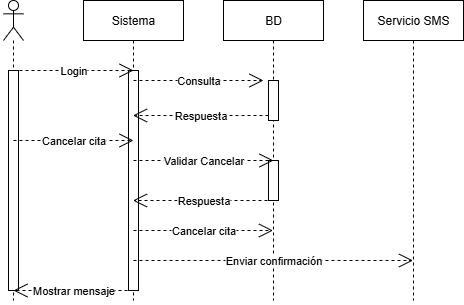
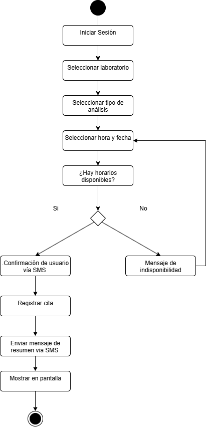
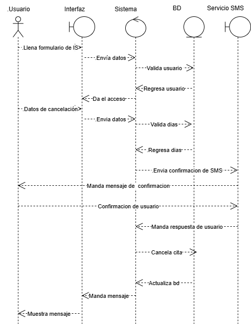

Sobre mí
Tengo experiencia en el levantamiento de requerimientos funcionales y no funcionales, documentación de historias de usuario, elaboración de diagramas UML y coordinación con equipos bajo metodologías ágiles como Scrum. Utilizo herramientas como Jira, Confluence y Azure DevOps para documentar, planificar y dar seguimiento a proyectos. También cuento con conocimientos sólidos en desarrollo frontend con HTML, CSS, JavaScript y React, lo que me permite proponer soluciones viables tanto desde el análisis como desde la implementación técnica.
 GitHub
GitHub
 LinkedIn
LinkedIn
 edileoleonel@gmail.com
edileoleonel@gmail.com
Calificador
 Ver proyecto🎓 Formación Académica y Autodidacta Cursé la Licenciatura en Informática en la UAEMex, donde adquirí conocimientos fundamentales en programación, bases de datos, ingeniería de software y análisis de sistemas. Además, complemento constantemente mi formación de manera autodidacta, a través de documentación oficial, cursos en línea y prácticas personales que me han permitido desarrollar proyectos reales y mantenerme actualizado en tecnologías como React, Node.js, Jira, Confluence y Azure DevOps.
💼 Sistema Web para Recursos Humanos (RH) Durante mi servicio social, desarrollé un sistema web para el área de Recursos Humanos en una institución educativa. Mi rol fue analista programador, participando en el levantamiento de requerimientos con el cliente, diseño de diagramas UML, y desarrollo del sistema utilizando HTML, CSS, JavaScript, PHP y MySQL. El sistema generaba reportes en PDF sobre faltas, permisos y vacaciones del personal, facilitando la toma de decisiones del área administrativa.


 






